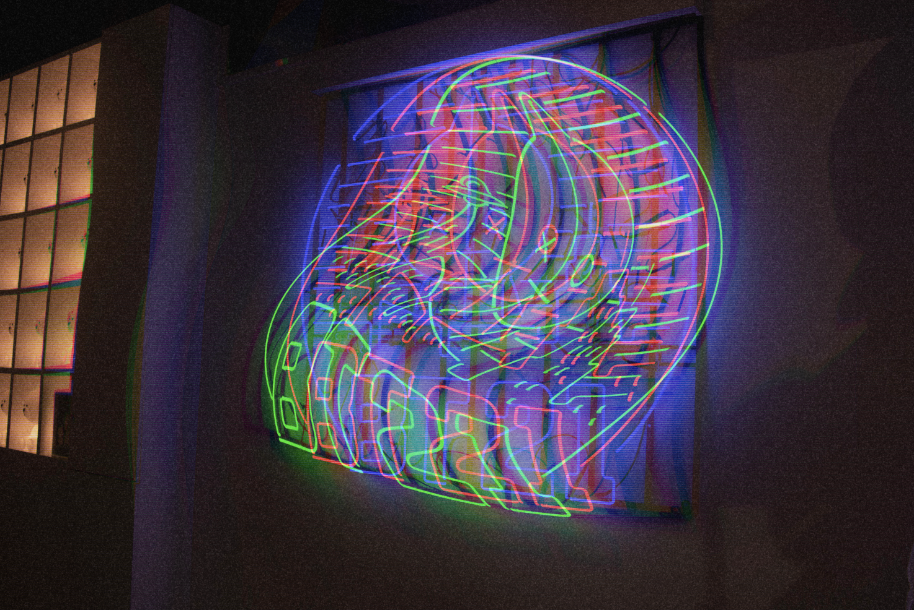
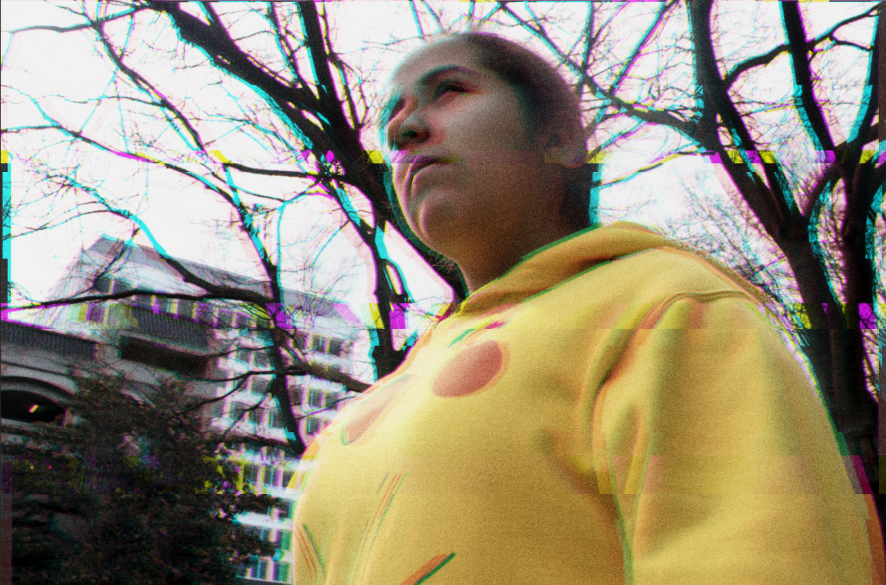
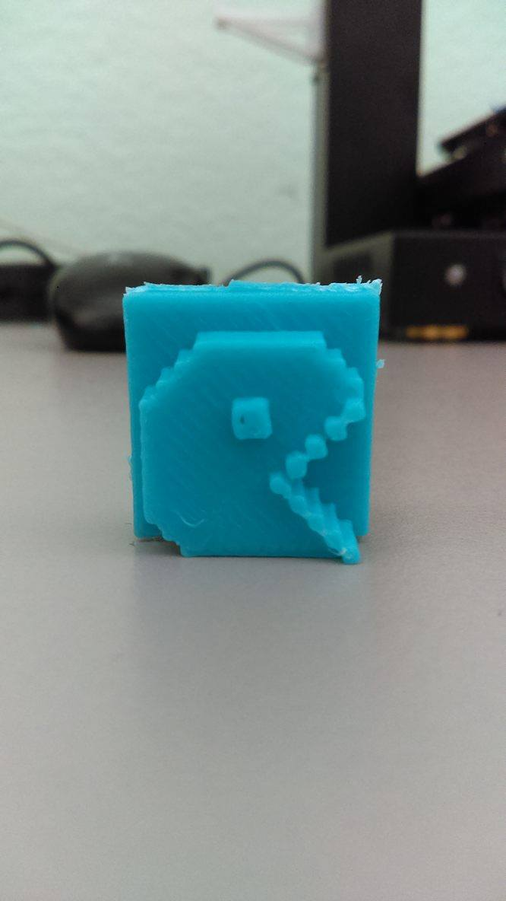

For as long as I remember, art has always been a part of my life. As a child, my artwork would range from paintings of flowers from my home to sketches of my favorite cartoon characters. However, as I grew older, I began to gain interest in the technological portion of art. It was not until I got my first laptop during my freshman year in college when I began to practice my art more seriously. I began to explore with different programs such as Adobe Photoshop, Adobe Dreamweaver, Unity, and Processing. Since careers involving technology are rapidly growing, I figured it would be best to learn these skills in order to contribute to society in making websites and apps easier for people to use. I aspire to become a web developer one day since I enjoy making and designing websites. As an artist, I believe art comes in all forms. Art can be the way someone prefers to prepare their favorite meal or the way they dress. It can even be as simple as the way a paper bag floats into the air. In other words, art is not limited to just digital art, pictorial art, or performance art but can be part of the daily routines we do every day. Even things we dislike is a kind of art. In my case, the art I enjoy doing that but that I also find bothersome are glitches.
Ever since I was a child, I have always been fascinated with color distortion. The way the colors and patterns would intertwine with each other during a distortion on a tv screen would amuse me.I began to experiment with color distortion myself by letting wet paint drip and mix with each other on a canvas or cropping out photographs in various angles and changing their saturation on my computer. As I grew older, I began to find a connection between glitches and my mental health. This was when I wanted to create artwork based on my experiences with anxiety. I wanted to stop feeling shameful for my lowest points of my mental health. I also wanted to make people aware that it is absolutely ok to not always feel your best and that they are not alone.
Photographs

Altered Vision
Photoshop, 2019
This photograph of a neon sign was taken with my DSLR camera at Los Angeles. I chose to distort the neon sign to demonstrate the feeling of not belonging while darkening the surrondings to potray the loneliness someone can feel by being an outcast. To create these effects, I used the program Adobe Photoshop in order to distort the neon sign by altering the original colors and shape of it. I create several layers to vary the distortion filters and wavelengths of the glitch in order to give the illusion of the glitches moving instead of looking stacked. I then added a camera raw filter to create a grainy surface in order to give the photograph a bit more of a mysterious ambience.
Wishes
Photoshop, 2019
This tree is located in Little Tokyo at Los Angeles. People would write their wishes on the paper and tie them onto the tree in hopes of having their wishes come true. But do they always come true? I decided to glitch this photograph using Adobe Photoshop to potray the feeling of insincerity and doubt that can rise inside someone when they hope for something great to happen to them. I moved the red and green layers of the image to make it look as if it was vibrating. After doing so, I added a Grain layer to make the writing on the papers less legible, since people's wishes should be confidential.

Thoughts
I took this photograph of my little sister with my DSLR camera at a park. I added a couple of glitches to the photograph using Photoshop. Similar to the first photograph, I varied the distortion layers and wavelength in order to make a glitched appearance. However, I decided to minimize the glitch movement in order to represent the deep thought my sister was in this image. I shortened the horizontal scale of the waves and lowered the wavelengths. Using the gradient tool, I changed it to noise instead of solid in order to have more variation in the image. From there I edited the exposure of the image using Lightroom until I got to this result. I decided to call this photograph "Thoughts" was because my sister was in deep thought about her school life when I took this picture of her. The glitches represent the worries she was having while showing a calm composure.
MLK Library
Adobe Lightroom, 2018
I took this photograph as personal practice using my DSLR camera and edited it on Adobe Lightroom. I slightly darkened the exposure of the image since it the sunlight behind the building made the raw photograph a bit too bright. I lowered the temperature of this photograph to match with the blue tinted windows and give it a cool crisp appearance. I focused my highlights towards the the top of the feelings in order to give it more of a dynamic feeling instead of looking like a static photograph. I changed the a little bit of the clarity just to make some parts of the photograph more clear.

Pacman 3D print
Meshlan/Minecraft, 2017
This is a 3D print I made during my Art 74 class. For this assignment, we were first required to build create a structure of our choice in the game Minecraft. For my structure, I decided to build PacMan since it is one of my favorite childhood games. When building my PacMan structure, I had to make sure I did not made it too thin or it would not print well. When I finished, I then extracted the image and inserted to Meshlab to resize my structure so it would not be too tiny to print. When finished, I began to print my structure and after an hour, my PacMan structure was completed. I had to cut some remaining filament parts off to make my art piece smoother.
Motion/Video
Am I really ok?
Premiere Pro/After Effects, 2019
This is a timelapse video of Downtown San Jose in the area I frequently walk by to do my errands. I always feel anxious when passing by the park because there are always people there. My anxiety always rises when I am crossing the street or being in large groups because I get scared of the idea of having people’s eyes on me. I know they are not but my anxiety always tells me otherwise. Everything around me also begins to sound muffled as my hands slowly become too numb to move while my mind and heart beat racing. Therefore, I created this to demonstrate what goes through my mind during those moments. I edited this video in After Effects and moved the red, green, blue layers in order to create the distorted layers.
Self Control
Processing/Premiere Pro, 2018
In this animation, I demonstrated self-control by having a large section of squares moving in a rapid speed while the smaller ones are in place. Even though the large squares seem to keep enlarging while moving rapidly, they do not overtake the whole screen, thus demonstrating self-control. Therefore, in order to make this possible, I used the commands "float", "println", and "random". For the background, I used "println" and "random(255);" in order to make a sine wave create tiny squares changing color rapidly to make it appear as they are moving. then using "void draw()" I put the size of the different set rectangles I wanted and enlarged them to take up almost half of the sketch. Luckily, even thought there is a lot of movement in my sketch, it does not crash.
Hell Duckies
Premiere Pro/Processing, 2018
I created a short animation of "Hell Ducks" as a fun practice with Processing. I animated the ducks and later put it into a video using Premiere Pro. In this Processing sketch, I mainly used the commands "float" and "collide" to make the ducks move around in a bunch. To make the screen glitchy, I added a couple of orange lines along with a slightly lighter orange sine wave to give the illusion of a glitch. This sine wave is a bit difficult to notice at first but if you look closely at the top, you can see the movement of the waves. However, in order to be able to create a video out of this sketch, I had to use the code "saveFrame" in order to have the movements saved as multiple pngs in order for the program to allow me to convert it from a sketch into a video.
Sunflowers
Premiere Pro/Processing, 2018
This sketch was created with Processing. I then converted it into a video on Premiere Pro to be able to put it into my website. I decided to make the sunflower image to change the colors of the background every time the image would pass over it. I decided to enlarge the image to make it seem as a napkin wiping a surface. I used a variety of ellipse sizes to make the sine waves. In order to make the ellipse change color every time the sunflower image went over them, I used the command "mouseDragged" and "mouseMoved" and put in the colors I wanted.
Evil Totoro
Photoshop/Illustrator, 2017
Since I really enjoy Studio Ghibli and paranormal stories, I decided to merge them together into a gif using Adobe Illustrator and Photoshop for my Art 74 class. I choose one of my favorite Studio Ghibli movie, Totoro, and decided to make a demonic version of him based on its dark conspiracy I read a while ago. I first drew a demonic version of Totoro on Illustrator. After doing so, I went on Google to find a Totoro image to combined it with my drawing into a frame animation using Photoshop. To give it more of an eerie effect, I decided to keep some of the white background from the googled image to make the gif appear like static. I had the gif spin around in a loop to show its transformation.
This was one of my first few animations I have done that I thought was ok enough to show. I decided to create a short animation portraying a girl feeling boredom. But when she discovers an unknown song she knows she did not added to her music playlist, little did she know she was about to enter into a different dimension. The meaning behind this animation is to portray the endless feeling of emptiness I have been feeling lately during quarantine. I usually do not have the energy to get out of my bed or do anything at all. Instead I would just lay in my bed while hearing music for hours until I manage to get the strength to get up. Music usually helps me feel recover from this feeling, especially when I happen to discover a new song. Therefore, I wanted to demonstrate how music helps me through this animation.
I completed this animation through Adobe Photoshop, Premiere Pro, and After Effects.
Glitched
Glitched is a digital art project which consists on a short animation that demonstrates my experience with anxiety.
In today’s society, mental health struggles are often not talked about due to the discomfort some might feel towards the topic. Oftentimes it is seen as something to keep to oneself in order to not be a burden to the people we care about. This used to be me whenever I would have an anxiety attack or feel extremely anxious. I used to keep these struggles to myself, in fear that people will view me as weak or make those whom I care about worry about me. I did not want to feel like a burden or have people pity me. I despise the idea of having people pity me, which is why I would always swallow my problems to myself, making my anxiety worse. Therefore, I would like for the audience who are going through a similar struggle as me to know that they are not alone in this battle through this animation. There is nothing to be ashamed of when struggling with mental health problems. At the same time, I want to show the viewers what goes through my mind whenever I have an anxiety attack. Oftentimes, some people dismiss these attacks as “nervousness” or “overreacting”, making the person feel guilty or ashamed of themselves. With this animation, I hope to change the viewer's perspective towards mental health struggles and perhaps make them reflect.